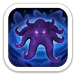
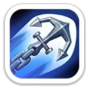
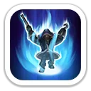
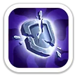
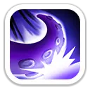
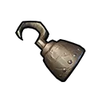
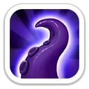
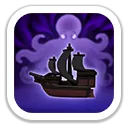

Песнь Р’льеха
Призывает древних духов, наносит урон целям в области и оглушает их на 1,5 секунды.
220% / 240% / 260% / 280% / 300% атаки

Снижение защиты · массовый урон · атакующие сборы
Хендрик — атакующий стрелок 8 поколения. Он хорошо раскрывается в длинном PvP: снижает защиту всей вражеской армии, периодически усиливает защиту союзников и наносит дополнительный массовый урон стрелками.
Максимальные базовые значения Хендрика 8 поколения.
На Арене Хендрик сочетает массовый урон, оглушение и постепенное усиление после добиваний.

Призывает древних духов, наносит урон целям в области и оглушает их на 1,5 секунды.
220% / 240% / 260% / 280% / 300% атаки

Бросает тяжёлый якорь и наносит урон противникам в области действия.
100% / 110% / 120% / 130% / 140% атаки

За каждого побеждённого врага повышает наносимый Хендриком урон. Максимум 15 накоплений.
+0.5% / +1% / +1.5% / +2% / +2.5% за накопление
Сильная сторона Хендрика в полевых боях и атакующих сборах.

Снижает защиту всех вражеских войск.
−5% / −10% / −15% / −20% / −25% защиты
Каждые 4 хода повышает защиту всех дружественных войск на 2 хода.
+6% / +12% / +18% / +24% / +30% защиты

Каждые 3 хода стрелки Хендрика наносят дополнительный массовый урон всем противникам.
8% / 16% / 24% / 32% / 40% урона

На максимуме: +2 107 атаки, +1 737 защиты, +13 027 здоровья, +193% летальности стрелков и +193% здоровья стрелков.


Очень хорош благодаря снижению защиты всей армии противника.
Сильный стрелок для длинных боёв с полезной смесью атаки и защиты.
Массовый урон, оглушение и дополнительная цель от особого снаряжения.
Полезнее многих защитников благодаря первому атакующему дебаффу, но итог зависит от состава и уровня навыков.
Хендрик — сильный атакующий стрелок 8 поколения. Его главная ценность не в чистых цифрах урона, а в снижении защиты всей армии противника. Для F2P Гатот обычно проще и выгоднее как первая инвестиция поколения, а Хендрик особенно интересен игрокам, которые ведут атакующие сборы.